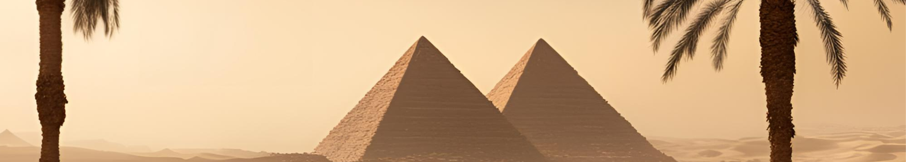
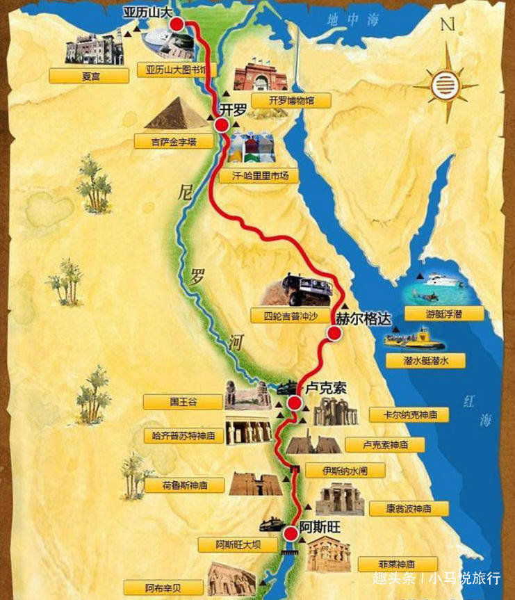

埃及
埃及氣候特徵
埃及位於非洲東北部，北臨地中海，大部分領土属於熱帶沙漠氣候，全年乾燥少雨，晝夜温差顯著。尼羅河沿岸和地中海沿岸氣候相對温和。
8℃
冬季平均低溫
40℃
夏季平均高溫
20mm
年均降水量
四季氣候特點
春季（3月-5月）： 氣温快速上升，3月平均20-25℃，5月可達35℃以上，偶有沙塵暴。
夏季（6月-8月）： 極端炎热，内陸白天常超40℃，红海沿岸濕熱，阿斯旺等南部地區可達50℃。
秋季（9月-11月）： 最佳旅游季節，白天溫暖，夜晚較涼，尼羅河泛濫季節结束，水位開始下降。
冬季（12月-2月）： 最舒適季節，開羅白天18-20℃，夜晚降至8-10℃，西奈山區可能會有降雪情況。
旅遊景點推介
精選相片
按此放大
埃及景點地圖
埃及景點地圖
埃及博物館
位於開羅的埃及博物館是世界上最著名的博物館之一，收藏了超過12萬件古埃及文物，包括圖坦卡門的黃金面具、木乃伊和大量法老時期的珍寶。博物館建築本身充滿歷史感，展品按年代排列，讓遊客能系統性了解古埃及文明。其中最引人注目的是二樓的圖坦卡門展廳，展示了這位年輕法老的隨葬品，華麗精緻，令人驚嘆。吉薩金字塔群與獅身人面像
吉薩金字塔群是埃及最標誌性的景點，包括胡夫金字塔、卡夫拉金字塔和孟卡拉金字塔，其中胡夫金字塔是古代世界七大奇蹟中唯一仍存世的建築。附近的獅身人面像（斯芬克斯）守護著金字塔群，其神秘的面容和巨大的身軀令人震撼。這些建築展現了古埃及人的工程與天文學智慧，至今仍是未解之謎的焦點。阿斯旺未完成方尖碑
位於阿斯旺採石場的未完成方尖碑是了解古埃及石材開採技術的重要遺跡。這座方尖碑因裂痕而被廢棄，仍與基岩相連，長約42米，若完成將是埃及最大的方尖碑。遊客可近距離觀察古人的雕刻技術，並想像當時的工程難度。此遺跡揭示了方尖碑的製作過程，是研究古埃及建築的珍貴資料。阿布辛貝神殿
由拉美西斯二世建造的阿布辛貝神殿是努比亞地區最壯觀的神廟，位於納賽爾湖畔。神殿外四尊巨大的拉美西斯二世坐像令人歎為觀止，內部則有精美的壁畫和雕刻。為避免被水淹沒，神殿在1960年代被切割遷移至現址，成為聯合國教科文組織的保護典範。每年2月22日和10月22日，陽光會直射至神殿最深處，照亮神像，吸引大量遊客。帝王谷
位於盧克索西岸的帝王谷是古埃及新王國時期法老的陵墓群，包括圖坦卡門、拉美西斯六世等著名法老的墓穴。墓室內的壁畫色彩鮮豔，描繪了亡靈的來世之旅，藝術價值極高。1922年發現的圖坦卡門墓更是轟動世界，其陪葬品現藏於埃及博物館。帝王谷的宏偉與神秘，讓它成為探索古埃及生死觀的必訪之地。埃及古文明之旅 (5日4夜)
主题：法老文明探秘，覆盖多項世界級遺跡
適合人群：古文明愛好者、攝影玩家、文化深度遊
行程特點：金字塔+尼罗河游轮+神庙+帝王陵墓
• 焦點：圖坦卡蒙金棺、木乃伊陳列室
• 建議：09:00開館即入，租用語音導覽
📍 吉薩金字塔群
• 參觀：胡夫金字塔、獅身人面像
• 注意：金字塔內部參觀需另購票
🏨 住宿：開羅市區酒店
🍽️ 餐飲：午餐/博物館餐廳｜晚餐/當地烤肉
• 重點：最古老金字塔建築群
• 交通：開羅出發車程45分鐘
📍 孟菲斯露天博物館
• 看點：拉美西斯二世臥像
✈️ 午後：飛往阿斯旺（1.5小時航程）
🛳️ 傍晚：登尼羅河游輪
🏨 住宿：游輪艙房
• 行程：04:00車隊出發（游輪協調接送）
• 參觀：拉美西斯二世巨像
📍 菲萊神殿
• 特色：水上伊西斯聖殿
• 時段：游輪停靠時參觀
🛳️ 夜航：游輪駛向康翁波
• 看點：鱷魚神索貝克廟
• 時間：清晨靠岸參觀
📍 埃德富荷魯斯神殿
• 特色：埃及保存最完整神殿
• 交通：馬車接駁（游輪含）
🛳️ 午後：航向盧克索
• 選擇：3座主要陵墓
• 策略：08:00首批入谷
📍 哈特謝普蘇特神殿
• 建築：三層台階式設計
📍 門農巨像
• 停留：20分鐘拍照點
🛳️ 中午：游輪退房，行程結束
• 標準航線：阿斯旺→康翁波→埃德富→盧克索（3天2夜）
• 含全餐+導覽，船過水閘時甲板關閉
岸上行程
• 阿布辛貝：游輪代辦軍方護送文件
• 埃德富：下船即換乘馬車至神殿
時間管理
• 游輪靠岸時間嚴格：務必準時返船
• 神殿參觀時段配合游輪停泊表
行前準備
• 游輪小費：預備美金現金（$5-10/天）
• 船艙選擇：右舷房優先（西岸景觀佳）
適合人群：古文明愛好者、攝影玩家、文化深度遊
行程特點：金字塔+尼罗河游轮+神庙+帝王陵墓
📜 第1天：博物館解碼｜開羅文明精華
📍 埃及博物館• 焦點：圖坦卡蒙金棺、木乃伊陳列室
• 建議：09:00開館即入，租用語音導覽
📍 吉薩金字塔群
• 參觀：胡夫金字塔、獅身人面像
• 注意：金字塔內部參觀需另購票
🏨 住宿：開羅市區酒店
🍽️ 餐飲：午餐/博物館餐廳｜晚餐/當地烤肉
🗿 第2天：巨石之謎｜薩卡拉至阿斯旺
📍 薩卡拉階梯金字塔• 重點：最古老金字塔建築群
• 交通：開羅出發車程45分鐘
📍 孟菲斯露天博物館
• 看點：拉美西斯二世臥像
✈️ 午後：飛往阿斯旺（1.5小時航程）
🛳️ 傍晚：登尼羅河游輪
🏨 住宿：游輪艙房
⛵ 第3天：尼羅河巡禮｜阿斯旺雙遺產
📍 阿布辛貝神殿• 行程：04:00車隊出發（游輪協調接送）
• 參觀：拉美西斯二世巨像
📍 菲萊神殿
• 特色：水上伊西斯聖殿
• 時段：游輪停靠時參觀
🛳️ 夜航：游輪駛向康翁波
🌅 第4天：河畔聖殿｜尼羅河中游
📍 康翁波雙神殿• 看點：鱷魚神索貝克廟
• 時間：清晨靠岸參觀
📍 埃德富荷魯斯神殿
• 特色：埃及保存最完整神殿
• 交通：馬車接駁（游輪含）
🛳️ 午後：航向盧克索
⚰️ 第5天：帝王永恆｜盧克西岸
📍 帝王谷• 選擇：3座主要陵墓
• 策略：08:00首批入谷
📍 哈特謝普蘇特神殿
• 建築：三層台階式設計
📍 門農巨像
• 停留：20分鐘拍照點
🛳️ 中午：游輪退房，行程結束
⚠️ 實用備註
游輪須知• 標準航線：阿斯旺→康翁波→埃德富→盧克索（3天2夜）
• 含全餐+導覽，船過水閘時甲板關閉
岸上行程
• 阿布辛貝：游輪代辦軍方護送文件
• 埃德富：下船即換乘馬車至神殿
時間管理
• 游輪靠岸時間嚴格：務必準時返船
• 神殿參觀時段配合游輪停泊表
行前準備
• 游輪小費：預備美金現金（$5-10/天）
• 船艙選擇：右舷房優先（西岸景觀佳）
其他網上行程建議(只供參考!)


- ©2025 Copyright by Raymond Chau -